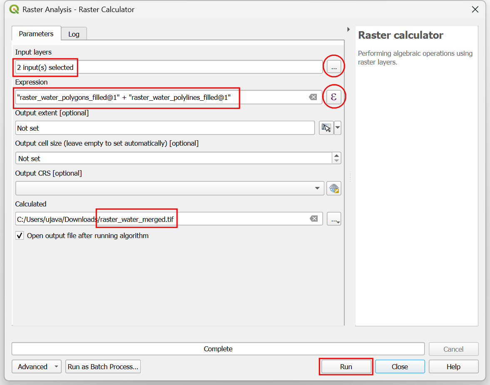
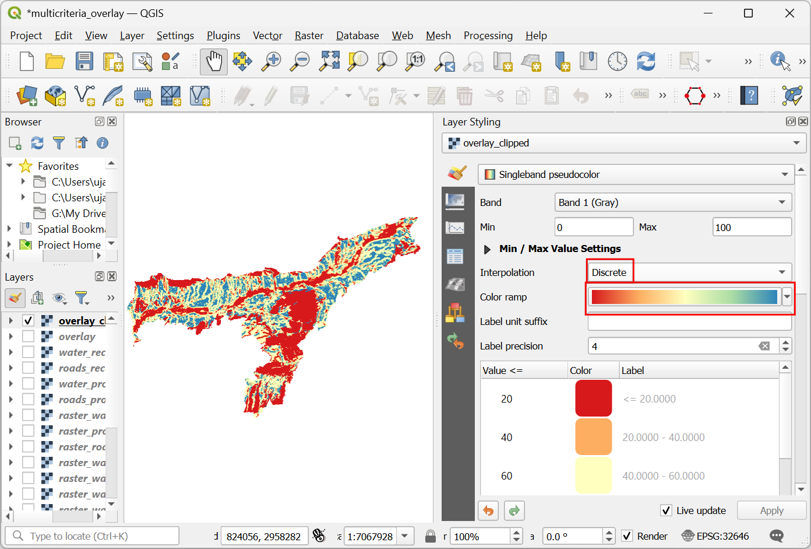

Ujaval Gandhi
Ujaval GandhiAnálisis de Sobreposición Multicriterio (QGIS3)¶
El análisis de sobreposición ponderado multicriterio es el proceso de asignación de áreas en base a una variedad de atributos que las áreas seleccionadas deberían poseer. A pesar de que esta es una operación común en SIG, es mejor realizada en el espacio ráster usando un enfoque basado en cuadrícula (grid).
Nota
Sobreposiciones Vector vs Ráster
Puede realizar el análisis de superposición en capas vectoriales utilizando herramientas de geoprocesamiento como el búfer, la disolución, la diferencia y la intersección. Este método es ideal si desea encontrar una respuesta binaria adecuado/no adecuado y está trabajando con un puñado de capas. Puede consultar nuestro tutorial en vídeo sobre Localización de una nueva estación de aparcamiento para bicicletas mediante análisis multicriterio por superposición para obtener una guía paso a paso sobre este enfoque.
Trabajar en el espacio raster le da una clasificación de la adecuación - no sólo el sitio más adecuado. También le permite combinar fácilmente cualquier cantidad de capas de entrada y asignar diferentes pesos a cada criterio. En general, éste es el enfoque preferido para conveniencia de sitio.
Este tutorial recorre el flujo de trabajo típico para realizar un análisis de conveniencia de sitio - convirtiendo datos vector fuente a los rasters apropiados, re-clasificándolos y realizando las operaciones matemáticas.
Vista general de la tarea¶
En este tutorial, identificaremos las áreas convenientes para desarrollo, que son
Cercanas a caminos, y
Alejadas de cuerpos de agua, y
No están en regiones protegidas.

Obtener los datos¶
Usaremos capas de datos vector de OpenStreetMap (OSM). OSM es una base de datos global de datos de mapa base libremente disponible. Geofabrik provee archivos shape actualizados diariamente de los conjuntos de datos OpenStreetMap.
Vamos a utilizar las capas de datos OSM para el estado de Assam en la India. Los shapefiles de Geofabrik India fueron descargados, reproyectados a una proyección UTM, recortados a los límites del estado y empaquetados en un único archivo GeoPackage. Puede descargar una copia del geopackage desde el siguiente enlace:
Fuente de Datos: [GEOFABRIK]
Procedimiento¶
Navegue al archivo
assam.gpkgdescargado en el Navegador QGIS. Expándalo y arrastre cada una de las 5 cadas individuales de datos a la pantalla de mapa. Verá que carga las capasboundary,roads,protected_regions,water_polygonsywater_polylinesen el panel Capas.

El primer paso en el análisis de superposición es convertir cada capa de datos en ráster. Una consideración importante es que todos los rásters deben tener la misma extensión. Utilizaremos la capa
boundarycomo extensión para todos los raster. Vaya a . Busque y localice el algoritmo . Haga doble clic para ejecutarlo.

En el diálogo Vector Conversion - Rasterize (vector to raster), seleccione
roadscomo Capa de entrada. Queremos crear un raster de salida donde los valores de los píxeles sean 1 donde haya una carretera y 0 donde no haya carreteras. Introduzca1como Un valor fijo para grabar. Las capas de entrada están en un SRC proyectado con metros como unidad. SeleccioneUnidades georeferenciadascomo Unidades de tamaño de la trama de salida. La resolución del raster de salida será de 15 metros. Seleccione15como Ancho/Resolución horizontal y Alto/Resolución vertical. A continuación, haga clic en la flecha situada junto a Extensión de salida y seleccione .

Desplácese hacia abajo hasta encontrar la Parámetros Avanzados y seleccione el perfil
Alta Compresiónpara aplicar la compresión. Esto generará un archivo raster comprimido de menor tamaño después de ejecutar la herramienta. La aplicación de la compresión sin pérdidas es muy recomendable cuando se trabaja con datos ráster.

Establezca el ráster de salida :guilabel: Rasterizado como
raster_roads.tify haga clic en :guilabel: Ejecutar`.

Once the processing finishes, you will see a new layer raster_roads loaded in the Layers panel. The raster has pixel values 1 for pixels which intersected with the roads. All other pixels are set as NoData values. These nodata values are problematic because when raster calculator (which we will use later) encounters a pixel with nodata value in any layer, it sets the output value of that pixel to nodata as well, resulting is unexpected output. We will fill these nodata values with the value 0. Search for and locate the algorithm. Double-click to launch it.

Seleccione
raster_roadscomo Entrada raster y elija0como Valor de relleno`. Desplácese hacia abajo hasta encontrar Parámetros avanzados y seleccione el perfilAlta compresiónpara aplicar la compresión. Establezca la Raster de salida comoraster_roads_filled.tify haga clic en Ejecutar`.

Una vez finalizado el proceso, verá la nueva capa
raster_roads_filledcargada en el panel Capas. Este raster tiene valores 1 para carreteras y 0 para sin carreteras. Si la capa no se visualiza correctamente, puede hacer clic en Abrir el panel de estilo de capas y ajustar Min a0y Max a1.

Repita los pasos 3-8 para las otras 3 capas vectoriales
protected_regions,water_polylinesywater_polygons. Es necesario rasterizar y rellenar las celdas nodata de estas capas. Si desea ejecutar estos pasos manualmente, puede configurar el diálogo del algoritmo de procesamiento, ejecutar el algoritmo y una vez que el algoritmo finalice, cambiar a la pestaña :guilabel:Parámetrosy simplemente cambiar los nombres de las capas de entrada y salida. También puede ejecutar cada algoritmo en las 4 capas en un solo paso utilizando el procesamiento por lotes. Consulte el tutorial procesamiento_por_lotes para obtener más información. Una vez que haya terminado, debería tener 4 capas ráster y generar las correspondientes capas rásterraster_roads_filled,raster_protected_regions_filled,raster_water_polylines_filledyraster_water_polygons_filled. Observará que tenemos dos capas relacionadas con el agua, ambas representan agua. Podemos fusionarlas para tener una única capa que represente las zonas de agua de la región. Busque y localice el algoritmo en la caja de herramientas de procesado. Haga doble clic para ejecutarlo.

Seleccione las capas
raster_water_polygonsyraster_water_polylinesutilizando el botón … como Capas de Entrada. Introduzca la siguiente expresión utilizando el botón ε. Mantenga el resto de opciones predeterminadas y guarde la capa de salida con el nombreraster_water_merged.tify haga clic en Ejecutar`.
"raster_water_polygons_filled@1" + "raster_water_polylines_filled@1"
El ráster resultante fusionado tendrá píxeles con valor 1 para todas las áreas con agua. Pero notará que hay algunas regiones donde había tanto un polígono de agua como una polilínea agua. Esas áreas tendrán píxeles con valor 2 - lo que no es correcto. Podemos corregir esto con una expresión simple. Abra de nuevo el algoritmo .

Seleccione la capa
raster_water_mergedutilizando el botón … como Capa de Entrada. Introduzca la siguiente expresión utilizando el botón ε. Mantenga el resto de opciones por defecto y guarde la capa de salida con el nombreraster_water_filled.tify haga clic en Ejecutar.
"raster_water_merged@1" > 0
La capa resultante
raster_water_filledtiene ahora píxeles con sólo valores 0 y 1.

Ahora tenermos capas que representan píxeles camino y agua, podemos generar rásters de proximidad. Estos son también conocidos como distancias Euclideanas - donde cada píxel en el ráster de salida representa la distancia al píxel más cercano en el ráster de entrada. Este ráster resultante luego puede ser usado para determinar áreas apropiadas que están dentro de cierta distancia de la entrada. Busque y localice el algoritmo . Doble-clic para iniciarlo.

En el cuadro de diálogo Análisis ráster - Proximidad (Distancia ráster), seleccione
raster_roads_filledcomo Capa de entrada. SeleccioneCoordenadas georreferenciadascomo Unidades de distancia. Como las capas de entrada están en un SRC proyectado con metros como unidades, introduzca5000(5 kilómetros) como Distancia máxima a generar. Para todos los píxeles que estén a más de la distancia máxima - también estableceremos sus valores en 5000. Así que establezca el valor de Nodata a utilizar para el raster de proximidad de destino en5000.

Puede expandir la etiqueta :guilabel: Parámetros Avanzados y seleccionar el perfil
Alta Compresiónpara aplicar la compresión. Asigne al archivo de salida el nombreroads_proximity.tify haga clic en Ejecutar.

Nota
Este proceso puede tardar hasta 15 minutos en ejecutarse. Se trata de un algoritmo de cálculo intensivo que necesita calcular la distancia de cada píxel de la trama de entrada.
Una vez que se complete el procesamiento, se agregará una nueva capa
roads_proximityal panel Capas. Para visualizarla mejor, cambiemos el estilo predeterminado. Clic en el botón Abrir el panel de Estilo de Capa en el panel Capas. Cambie el valor Max a5000bajo Gradiente de color.

Repita el algoritmo Proximidad (Distancia Raster) para la capa
raster_water_filledcon los mismos parámetros y nombre la salidawater_proximity.tif. Si hace clic en el raster resultante, verá que es un continuo de valores de 0 a 5000. Para utilizar este ráster en el análisis de superposición, primero debemos reclasificarlo para crear valores discretos. Abra de nuevo el algoritmo .

Queremos dar un puntaje mayor a píxeles que están cerca de caminos. Así que usemos el siguiente esquema.
0-1000m –> 100
1000-2000m –> 50
>2000m –> 10
Seleccione la capa
roads_proximityutilizando el botón … como Capa de Entrada. Introduzca la siguiente expresión que aplica los criterios anteriores en la entrada. Mantenga el resto de opciones por defecto y guarde la capa de salida con el nombreroads_reclass.tify haga clic en Ejecutar.100*("roads_proximity@1"<=1000) + 50*("roads_proximity@1">1000)*("roads_proximity@1"<=2000) + 10*("roads_proximity@1">2000)
Una vez que finalice el proceso de reclasificación, se agregará una nueva capa
roads_reclassal panel Capas. Esta capa sólo tiene 3 valores diferentes, 10, 50 y 100 que indican la conveniencia relativa de los píxeles con respecto a la distancia de los caminos. Abra de nuevo el algoritmo .
Repita el proceso de reclasificación para la capa
water_proximity. Aquí el esquema será a la inversa, donde los píxeles que están más lejos del agua deberían tener un puntaje mayor.
0-1000m –> 10
1000 -2000m —> 50
>2000m –> 100
Seleccione la capa
water_proximityutilizando el botón … como Capa de Entrada. Introduzca la siguiente expresión que aplica los criterios anteriores a la entrada. Mantenga el resto de opciones por defecto y guarde la capa de salida con el nombrewater_reclass.tify haga clic en Ejecutar.100*("water_proximity@1">2000) + 50*("water_proximity@1">1000)*("water_proximity@1"<=2000) + 10*("water_proximity@1"<1000)
Ahora estamos listos para hacer el análisis final de superposición. Recordemos que nuestros criterios para determinar la idoneidad son los siguientes: cerca de carreteras, lejos del agua y no en una región protegida. Abra . Seleccione las capas
roads_reclass,water_reclass,raster_protected_regions_filledutilizando el botón … como Capas de entrada. Utilice el botón ε para introducir la siguiente expresión que aplica estos criterios. Mantenga los demás parámetros por defecto. Nombre la salidaoverlay.tify haga clic en Ejecutar.
(("roads_reclass@1" + "water_reclass@1")/2) *("raster_protected_regions@1" != 1 )
Nota
En este ejemplo, damos la misma ponderación a la proximidad de la carretera y del agua. En la vida real, puede tener varios criterios con diferente importancia. Puede simularlo multiplicando los raster con los pesos adecuados en la expresión anterior. Por ejemplo, si la proximidad a las carreteras tiene el doble de importancia que la proximidad al agua, en lugar de ((«roads_reclass@1» + «water_reclass@1»)/2), puede utilizar la expresión ((2*«roads_reclass@1» + «water_reclass@1»)/3).
Una vez finalizado el proceso, el ráster resultante se añadirá al panel Capas. Los valores de los píxeles de esta trama van de 0 a 100, siendo 0 la zona menos adecuada y 100 la más adecuada para el desarrollo. Recortemos los resultados a la capa límite. Abra el algoritmo .

En el diálogo Raster Extracción - Recortar Raster por Capa de Máscara, seleccione
overlaycomo la Capa de entrada yboundarycomo la Capa de máscara.

Desplácese hacia abajo hasta encontrar la opción Parámetros Avanzados y seleccione el perfil
Alta Compresiónpara aplicar la compresión. Guarde la capa Recortado (máscara) comooverlay_clipped.tify haga clic en Ejecutar.

Una vez finalizado el procesamiento, la capa de salida final
overlay_clippedse añadirá al panel Capas. Haga clic en el botón Abrir el panel de estilos de capa del panel Capas y seleccione el renderizadorPseudocolor de banda única.

Ajuste la Interpolación a
Discretoy elija la rampa de colorEspectral.

Haga clic en los valores de etiqueta predeterminados junto a cada color e introduzca las etiquetas adecuadas.

Las etiquetas también aparecerán como leyenda bajo la capa
overlay_clipped. Este es nuestro mapa final, que muestra la idoneidad del emplazamiento según los criterios elegidos.

If you want to give feedback or share your experience with this tutorial, please comment below. (requires GitHub account)